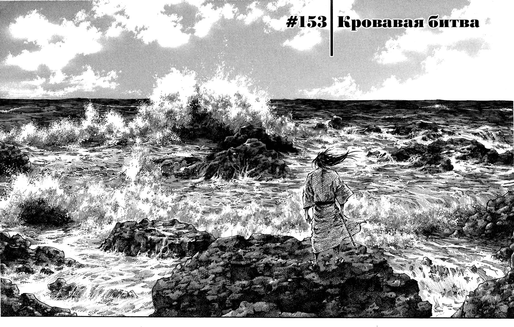
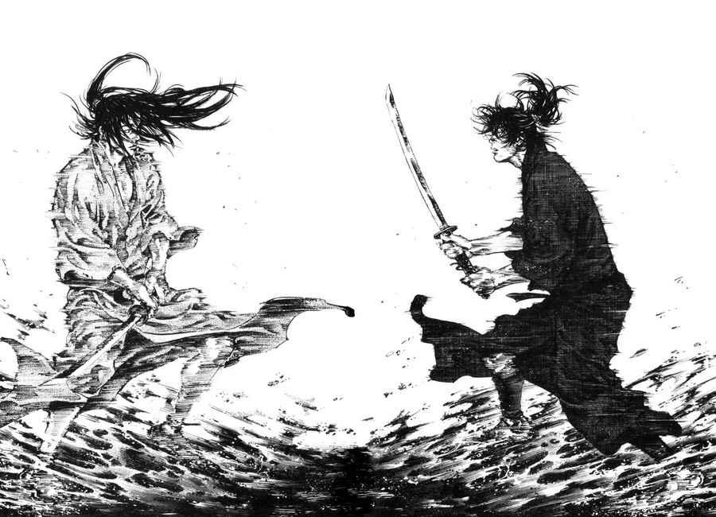
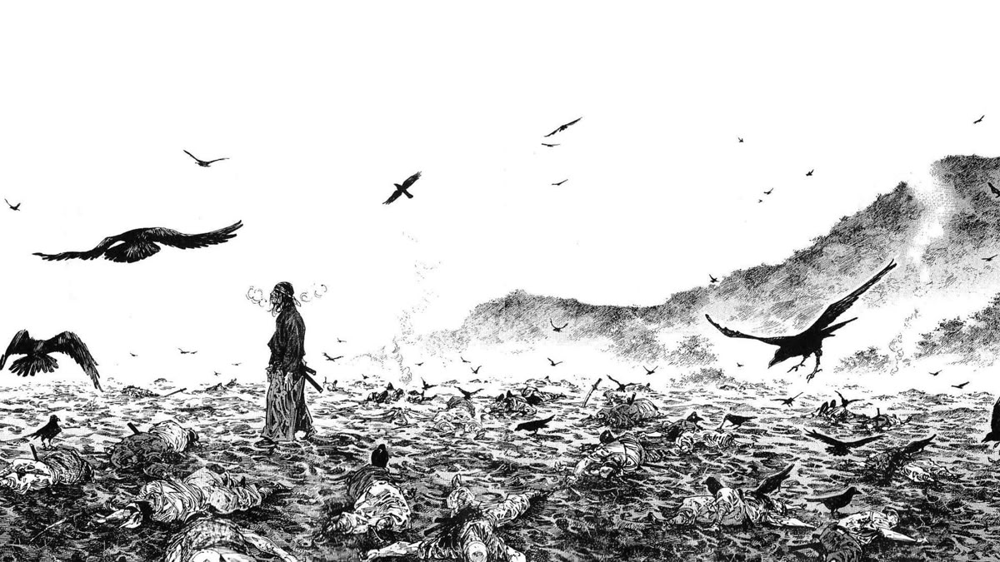
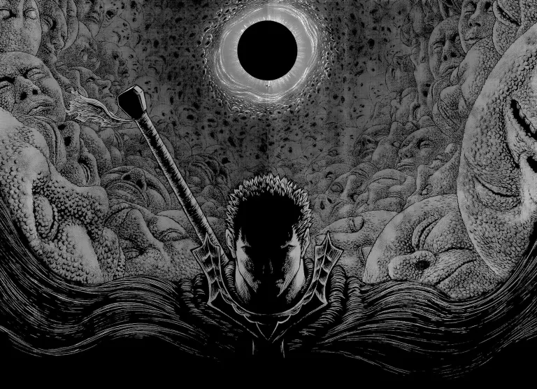
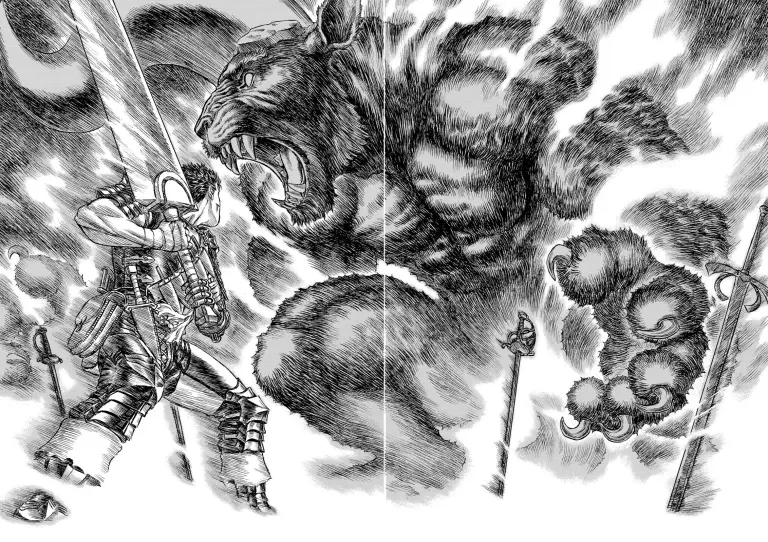
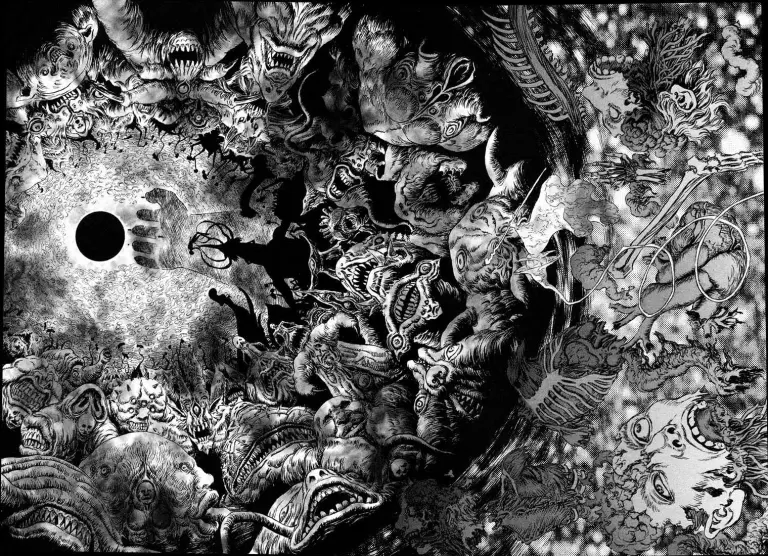
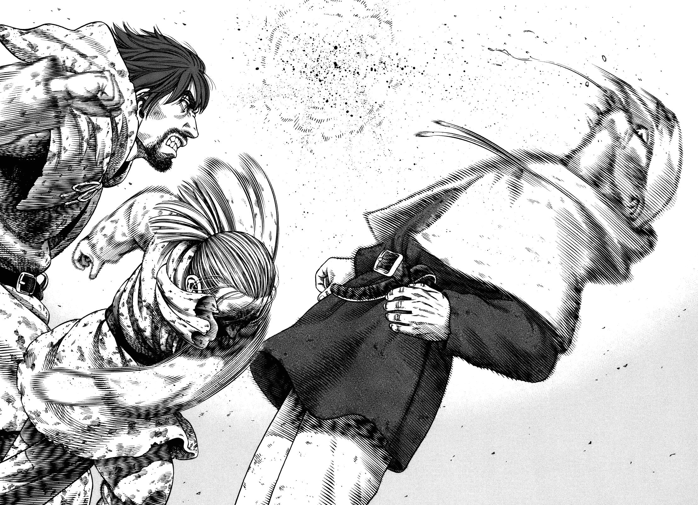
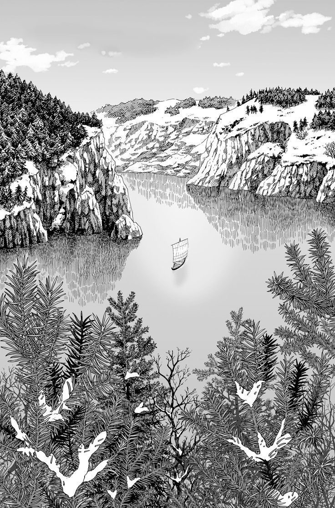
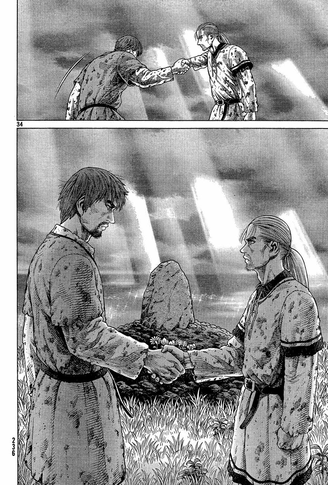

Безусловно. Эти три манги — столпы жанра, где философский поиск и художественная форма сливаются в нечто, претендующее на звание высокого искусства.
Эпическое переосмысление жизни легендарного мастера меча Миямото Мусаси
Это эпическое, основанное на романе Эйдзи Ёсикавы, переосмысление жизни легендарного мастера меча Миямото Мусаси. Мы встречаем его юным бандитом по имени Такэдзо, одержимым лишь грубой силой и славой. История — это его многолетний путь бродяги, ищущего на дорогах феодальной Японии не просто противников для побед, но предельного понимания себя, своего ремесла и сути бытия через столкновения с другими великими мастерами, такими как Сасаки Кодзиро.
Идея пути («до») как бесконечного самосовершенствования. Вопрос: что такое истинная сила? Это физическое превосходство или духовная целостность? Манга исследует эго, одержимость, одиночество гения и поиск гармонии с миром. Мусаси начинается как «дикий зверь» и через страдание и рефлексию стремится стать «художником» жизни, где меч — лишь кисть.
Рисунок Иноуэ — это титанический труд, возведенный в абсолют. Он отказался от помощников, и каждая страница — это персональный шедевр.



Мрачный эпос о борьбе человеческой воли против предопределенности
В мрачном мире, напоминающем средневековую Европу, обреченный на вечное преследование демонами наемник-одиночка Гатс ведет бесконечную войну. Его путь — это месть бывшему другу и возлюбленному Гриффиту, который ради абсолютной власти принес в жертву своих соратников, став богоподобным существом. Сюжет строится на двух линиях: «золотой эпохи» прошлого, полной братства и рокового выбора, и мрачного настоящего, где Гатс скитается с проклятием, защищая немногих близких ему людей.
Борьба человеческой воли против предопределенности, судьбы и богов. Манга исследует природу травмы, одержимости и способности оставаться человеком в абсолютно бесчеловечном мире. Это притча о цене мечты (Гриффит) и цене выживания (Гатс). Глубочайший вопрос: можно ли, пройдя через абсолютное зло и страдание, найти не просто цель для мести, но и смысл для жизни?
Графика Миуры — это мрачный, готический шедевр индустрии, не имеющий аналогов по плотности и детализации.



Исторический эпос о пути от мести к созиданию
Начавшись как суровый исторический эпос о викингах эпохи короля Кнуда Великого, манга следует за Торфинном, сыном легендарного воина. Охваченный жаждой мести убийце отца, хитроумному Аскеладду, юный Торфинн проводит годы в жестоких битвах как его орудие. Однако, пройдя через ад войны и рабства, он совершает радикальный поворот: отвергает насилие и отправляется в почти мифическое путешествие, чтобы найти «Винланд» — землю, свободную от рабства и войн, и построить ее своими руками.
Это глубокое исследование насилия, его цикличности и возможности истинного ненасилия (пацифизма) в жестоком мире. Манга задает вопросы: Что делает человека «истинным воином»? Тот, кто сильнее всех убивает, или тот, кто умеет защищать, не убивая? Это путь от «у меня нет врагов» как детской наивности к тому же утверждению как результату титанической работы духа и высшего мужества.
Стиль Юкимуры — это мост между жестоким реализмом и возвышенной красотой.



Эти три автора используют холст манги для создания не серийных развлечений, а графических философских трактатов. Иноуэ лепит душу через тело и природу, Миура строит соборы ада для вопросов о воле и судьбе, а Юкимура на контрасте ужаса войны и красоты мира ищет рецепт человечности. Их арт — не стиль ради стиля, а обязательная, единственно возможная форма для их глубокого, сложного и бесконечно художественного высказывания. Это и есть высшая точка, которой может достичь манга жанра сэйнэн.